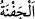
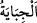

el-Mebsût’ta bu konudaki kerahet mutlak olarak zikredilmiştir. Çünkü üzerinde namaz
kılınan yaygılara diğer yaygılara nispetle daha çok tâzim gösterilir. Üzerinde resim olan
yaygılar üzerinde namaz kılındığında resimlere de ta’zim edilmiş olur. Halbuki biz
onları aşağılamakla emrolunduk.
Ahî Çelebi Hâşiyesi’nde der ki: “Eğer şekil/resim haç gibi kâfirlerin ta’zim gösterdiği
bir şey olursa, onun üzerine secde etmenin mekruh olduğunda şüphe yoktur. Nitekim
Zahîruddîn şöyle der: “Bu konuda aslolan şudur: Kâfirlerin ta’zim ettiği konularda
onlara benzemenin söz konusu olduğu herşeye yönelerek namaz kılmak mekruhtur.” Eğer
resim yere atılan bir yastıkta veya döşenmiş bir yaygıda olursa bunda kerahet yoktur.
Çünkü bunlar basılıp çiğnenir. Bu da o resmi aşağılama olmuş olur. Şayet yastık/minder,
büyük yastıklar gibi bir yere dikilmiş/dizilmiş olursa veya örtünün üzerinde olursa
durum bunun aksinedir. Çünkü bu durumda bunlara ta’zim edilmiş olur.
el-Hulâsa’da der ki: “Eğer sûret/resim bir yastık ve yaygı üzerinde olursa, bunları
edinmek mekruh ise de kullanmakta bir beis yoktur. Şayet bir elbise ve örtüde olursa bu
mekruhtur. Namazın cevaz şartları mevcut olduğu için bütün bu fasıllarda namaz
bozulmaz. Buradaki yasaklama yasak edilen şeyin dışında başka bir mânâ içindir. Bu
suretlerle kılınan namazlar mekruh olmayan bir şekilde iade edilir. Zaten ta’dîl-i erkânı
terk eden kimsenin durumunda olduğu gibi kerahetle kılınan her namazın hükmü budur.
Nitekim el-Kâfi’de böyle geçmektedir.
“Havuzlar kadar” büyük havuzlar gibi “(geniş) leğenlerden” yâni şeytanlar
Süleyman için ahşap kâselerden ve bunun dışındaki şeylerden yapıyorlardı.
“ kelimesi, “ nin çoğuludur. Cefne büyük sahan ve çanak demektir. Sahan ve
nin çoğuludur. Cefne büyük sahan ve çanak demektir. Sahan ve
çanakların en büyüğü “dir. Sonra “ gelir ki on kişiyi doyurur. Sonra “
gelir ki beş kişiyi doyurur. Sonra “ gelir ki iki-üç kişiyi doyurur. Sonra “
gelir ki bir kişiyi doyurur. Bazılarının yaptığı gibi “ kelimesini “, yâni
yemek tabakları olarak tefsir etmek üzerinde düşünülmesi gereken bir meseledir. Bunu
Şeyhülislâm Sa’dî Efendi söylemiştir. el-Müfredat’ta geçtiği gibi “ yemek
kaplarına mahsus bir isimdir.
“ kelimesinin aslı “dir. “ (toplamak)” kökünden “ kelimesinin
çoğuludur. Geniş leğenlerin içinde su toplandığı için onlara bu isim verilmiştir. Râğıb
der ki: “Suyu havuzda topladım anlamında “ ” denir. Suyu toplayan
havuza da “ denir. Bundan mecaz olarak “ (Haracı topladım)”
denilmiştir.
Denilir ki: Bu (geniş) leğenlerden/çanaklardan birinin başına bin kişi oturur ve ondan
yerdi. Süleyman (a.s.)’ın mutfağı için her gün on iki bin koyun ve bin sığır (kesilirdi).
Onun on iki bin fırıncısı vardı. Kavmin çokluğu sebebiyle on iki bin aşçı bu büyük
leğenlerde/kazanlarda yemek yapardı.
Kureyş ulularından Âişe Sıddîka (r.anhâ)’nın amca oğlu Abdullah b. Cüd’an’ın büyük